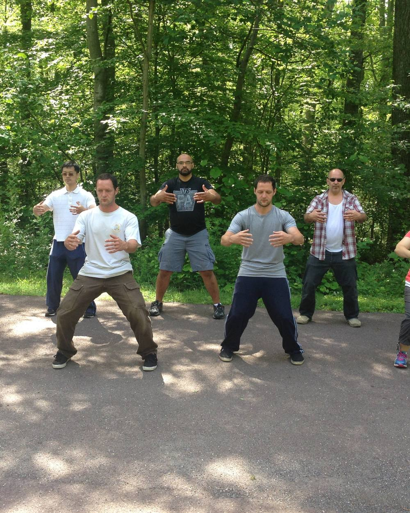

Sul da Califórnia · Kung-Fu interno
Little NineHeaven
Wu Tao · O caminho taoista
Antigas artes internas enraizadas na sabedoria taoista — cultivando mente, corpo e espírito desde 2698 a.C.
Descer
Sul da Califórnia · Kung-Fu interno
Wu Tao · O caminho taoista
Antigas artes internas enraizadas na sabedoria taoista — cultivando mente, corpo e espírito desde 2698 a.C.
A nossa linhagem
Little Nine Heaven é o mais antigo sistema taoista conhecido, com origens que remontam a 2698 a.C. Não são meras artes marciais: são sistemas completos de autocultivo, cura e transformação interior, transmitidos por uma linhagem ininterrupta de mestres.
No sul da Califórnia damos continuidade a esta tradição. As aulas são reduzidas, o ensino é pessoal, e a profundidade oferecida ao aluno dedicado não tem paralelo no mundo moderno.
Informar-se sobre as aulasO programa
Cada sistema é um mundo em si — um caminho completo de estudo que liga movimento, respiração, intenção e espírito.
01
O mais antigo sistema taoista hoje conhecido, datado de 2698 a.C. Três pilares: o punho, a esgrima e a lavagem da medula óssea. Ensinado apenas a alunos avançados escolhidos pessoalmente.
02
Uma antiga arte de combate e de cura. Cinco elementos, doze animais, tien-gunn, seis harmonias, nove essências. Enganosamente simples e infinitamente profunda: fácil de aprender, dificílima de dominar.
03
A antiga forma das 13 posturas com 64 movimentos. A energia do enrolar da seda percorre os meridianos do corpo, gerando uma força extraordinária através de movimento espiralado preciso e meditação em movimento.
04
Uma arte de rua prática e directa, do início do século XVIII. Trabalho de pés rápido, pontapés baixos, golpes explosivos. Formas individuais e a dois, concebidas para aplicação real.
05
O desenvolvimento de mãos com força de ferro mantendo uma aparência normal. Enraizado nos templos de Shaolin. Não existe no mundo outro treino de Mão de Ferro comparável.
06
Oito trigramas. Rotação constante, mudança constante. Oito animais, dez exercícios, três formas de caminhar. O objectivo último: mover-se, agir e reagir com total liberdade natural.
07
As artes clássicas da alcova. Conservar o jing, transformá-lo em chi e fazê-lo circular pelo corpo — a energia sexual entendida como cultivo e não como desperdício.
08
Formas sentadas e de pé. Um caminho estruturado para a quietude interior, a elevação do chi e o acesso a estados superiores de consciência — o alicerce de todas as artes externas.
09
Lavagem da medula óssea — o nei-kung avançado do sistema Little Nine Heaven. Respiração, fortalecimento e circulação de energia para vitalidade e longevidade. Aberto a qualquer adulto dedicado.
10
Punho do Portão dos Caracteres. Um raro sistema suave de Shaolin, dezoito caracteres contidos em três formas. Leve, rápido, golpeando com a ponta dos dedos — preservado pelo Mestre Chin Cheng-Yen.
11
Respiração e circulação de energia para a saúde, junto com as artes de cura do tui na, da acupressão e da moxabustão. Aberto a qualquer idade e nível de condicionamento, sem necessidade de experiência marcial.
«O bem supremo é como a água, que beneficia todas as coisas sem com elas disputar.»— Tao Te Ching · Lao Tsé
Os mestres
Estas artes foram transmitidas por uma corrente viva de mestres. Estudar connosco é tocar essa corrente.
O treino


Perguntas
Em Santee, Califórnia, no condado de San Diego. As aulas são particulares e com hora marcada. Não está perto de San Diego? Sifu Ajay Kumra também viaja pelo mundo para dar aulas particulares onde você estiver. Use o formulário abaixo para entrar em contato e combinar um horário.
Não há horário público. As aulas são particulares e apenas com hora marcada, individuais ou em pequenos grupos, em horários combinados com Sifu Ajay Kumra.
Sim. Sua primeira aula é uma aula introdutória gratuita.
As artes internas da tradição Little Nine Heaven, incluindo Hsing-I (Xing Yi Quan), Ba Kua (Baguazhang), Tai Chi estilo Chen, Chi-Kung (Qigong), meditação taoísta, Tzu Men Chuan e o treino de Mão de Ferro.
Sim. O Tai Chi Chen é ensinado como arte marcial e como prática de saúde, sem separar as duas coisas. Quem vem pela saúde não perde nada: a mecânica que torna a arte eficaz é a mesma que a torna boa para o corpo.
Sim. O Shih Shui é ensinado apenas de forma particular, pessoalmente e etapa por etapa. Está disponível como treinamento independente para qualquer adulto comprometido, homem ou mulher, sem necessidade de experiência em artes marciais, e pode ser praticado junto com outra arte marcial, um esporte ou ioga.
Sifu Ajay Kumra, que treinou com o Mestre James McNeil da linhagem Little Nine Heaven.
Santee, Califórnia
As aulas de artes internas são dadas a título pessoal. Se está disposto a comprometer-se com o estudo sério destes sistemas raros e poderosos, escreva-nos. A porta está aberta a quem procura.
Instrução particular em Santee, Califórnia (condado de San Diego), apenas com marcação. A sua primeira aula é uma introdução gratuita.
Prefere e-mail? Escreva para info@l9hkungfu.com
Little Nine Heaven SoCal · Sul da Califórnia